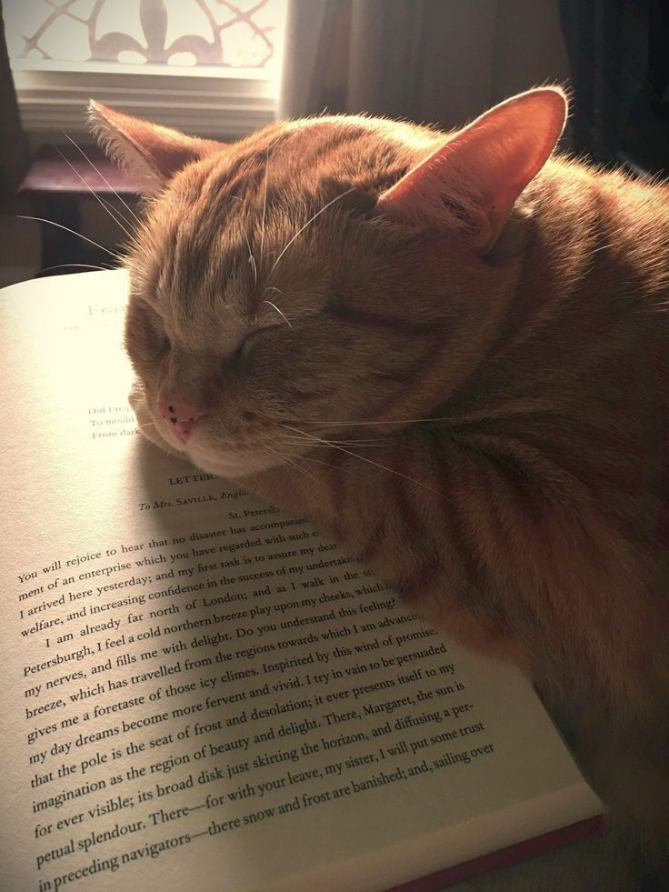

Você sabe o benefício da leitura?
A leitura estimula o raciocínio, melhora o vocabulário, aprimora a capacidade interpretativa, além de proporcionar ao leitor um conhecimento amplo e diversificado sobre vários assuntos. Ler desenvolve a criatividade, a imaginação, a comunicação, o senso crítico, e amplia a habilidade na escrita.
É costume de um tolo, quando erra, queixar-se dos outros. É costume de um sábio queixar-se de si mesmo.
- Sócrates
"A felicidade não é a ausência de conflito, mas sim a habilidade de lidar com ele. Uma pessoa feliz não tem o melhor de tudo, mas ela torna tudo melhor"
- Autor deconhecido